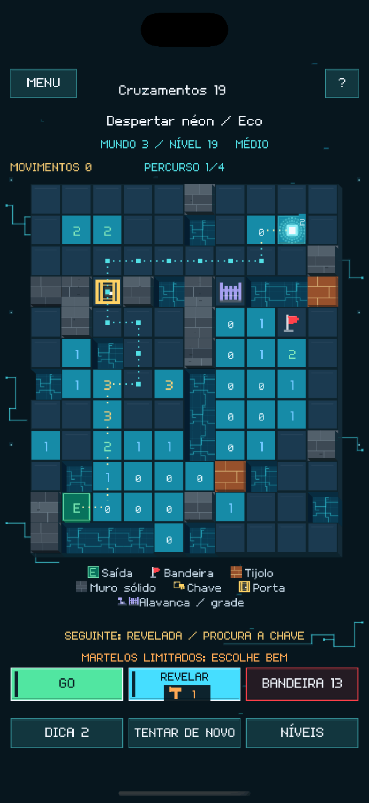
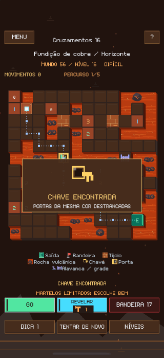
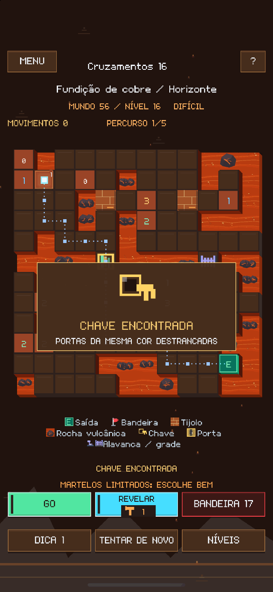
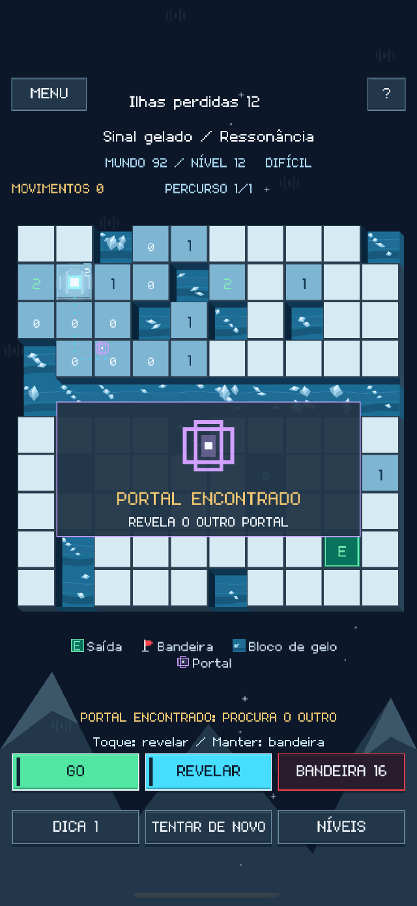

01
Planeia o percurso
Lê os números, marca as minas e encontra um caminho seguro.
Disponível no Google Play
Lê os números, assinala as minas e revela um caminho seguro até à saída. Tu preparas o caminho. A luz segue-o.


Disponível em Android
Lê as pistas, marca as minas e guia uma pequena luz por caminhos seguros em mundos de puzzles.

Lê os números, marca as minas e encontra um caminho seguro.

Chaves, portais e obstáculos tornam cada mundo diferente.

Começa com 60 puzzles gratuitos e desbloqueia o jogo completo quando quiseres.
Lumen Mine · YouTube
Veja o jogo em ação e descubra os puzzles, os mundos e as imagens do jogo.
Explora gratuitamente os três primeiros mundos. Uma única compra na aplicação desbloqueia o jogo completo, com 300 mundos e 6 000 puzzles no total.